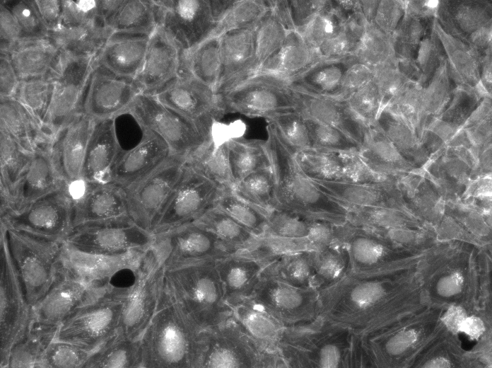
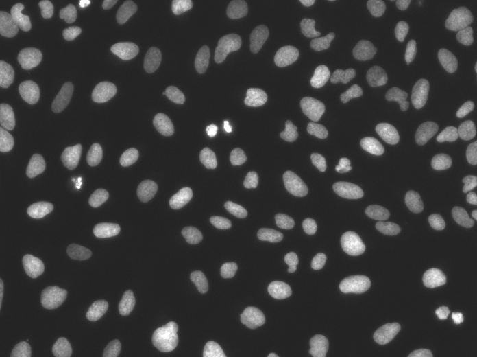
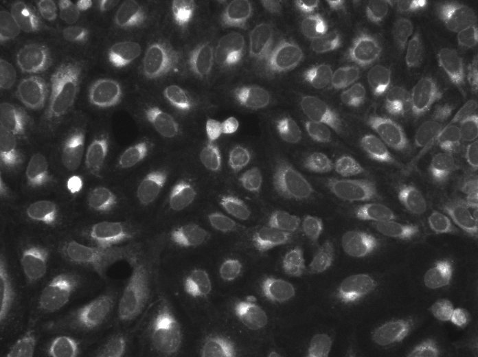
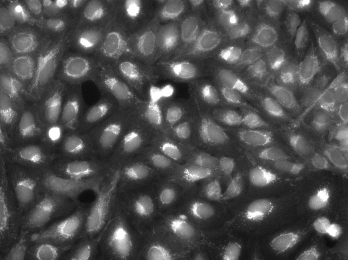
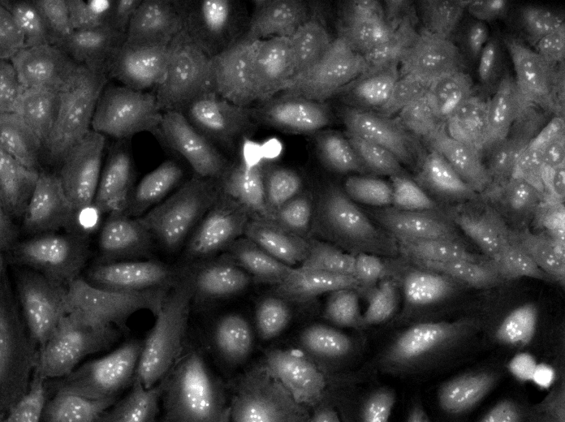

Broad Bioimage Benchmark Collection
Annotated biological image sets for testing and validation
Human U2OS Cells – profiling bioactive compounds using Cell Painting
Accession number BBBC036 · Version 1
Example images
-

-

-

-

-

Description of the biological application
Phenotypic profiling attempts to summarize multiparametric, feature-based analysis of cellular phenotypes of each sample so that similarities between profiles reflect similarities between samples. This image set provides a basis for testing image-based profiling methods wrt. to their ability to distinguish the effects of small molecules, which are annotated by their Mechanism of Action (MoA).
Images
Images are captured by ImageXpress Micro XLS automated microscope, with 5 fluorescent channels at x20 magnification, in 6 fields of view per well. Each image channel was then stored as a separate, grayscale image file in 16-bit TIF format.
Ground truth B
1553 compounds in the dataset are annotated with their known MoA(s), which are obtained from the repurposing hub (https://clue.io/repurposing-app) (Corsello et al. 2017).
BBBC036_v1_DatasetGroundTruth.csv (132 KB)
Description of columns:
- Metadata_broad_sample: Internal Broad ID of the compound
- Metadata_pert_iname: Compound name
- Metadata_pert_iname2: Alternative compound name
- Metadata_moa: Mechanism of Actions
- Metadata_target: Known protein targets of the compound
We used the Repurposing hub [https://clue.io/repurposing-app], to annotate compounds with their mechanism-of-action (accessed on Feb. 28th 2018). For missing annotations, we used other resources such as https://www.drugbank.ca. [1] Corsello, S. M. et al. The Drug Repurposing Hub: a next-generation drug library and information resource. Nat. Med. 23, 405–408 (2017).
For more information
These images were contributed by Mark Bray. More information about this dataset can be found in the publication below (Bray, 2017).
Published results using this image set
Bray, Mark-Anthony, Sigrun M. Gustafsdottir, Mohammad H. Rohban, Shantanu Singh, Vebjorn Ljosa, Katherine L. Sokolnicki, Joshua A. Bittker, et al. (2017). A Dataset of Images and Morphological Profiles of 30 000 Small-Molecule Treatments Using the Cell Painting Assay. GigaScience 6 (12): 1–5. 10.1093/gigascience/giw014 PMID: 28327978 PMCID: PMC5721342
Recommended citation
"We used image set BBBC036v1 Bray et al. 2018, available from the Broad Bioimage Benchmark Collection [Ljosa et al., Nature Methods, 2012]."
Copyright
 These images are licensed under a
Creative Commons Attribution 3.0 Unported License
by Mark Bray.
These images are licensed under a
Creative Commons Attribution 3.0 Unported License
by Mark Bray.